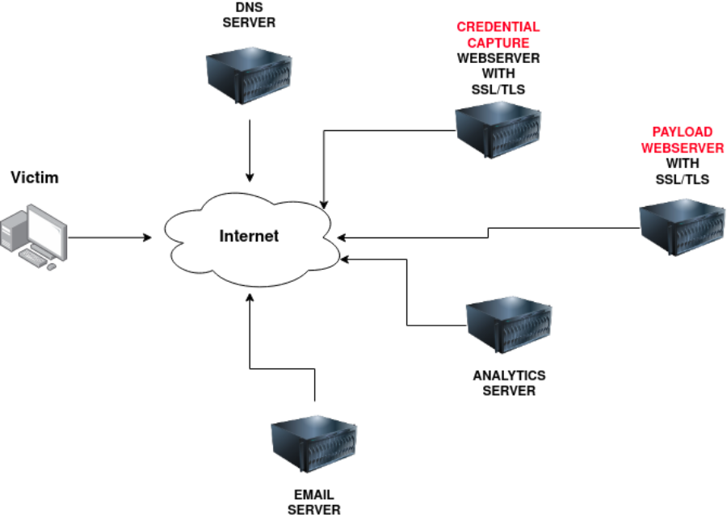

Phishing Infrastructure
Domain Name:
You'll need to register either an authentic-looking domain name or one that mimics the identity of another domain. See task 5 for details on how to create the perfect domain name.
SSL/TLS Certificates:
Creating SSL/TLS certificates for your chosen domain name will add an extra layer of authenticity to the attack.
Email Server/Account:
You'll need to either set up an email server or register with an SMTP email provider.
DNS Records:
Setting up DNS Records such as SPF, DKIM, DMARC will improve the deliverability of your emails and make sure they're getting into the inbox rather than the spam folder.
Web Server:
You'll need to set up webservers or purchase web hosting from a company to host your phishing websites. Adding SSL/TLS to the websites will give them an extra layer of authenticity.
Analytics:
When a phishing campaign is part of a red team engagement, keeping analytics information is more important. You'll need something to keep track of the emails that have been sent, opened or clicked. You'll also need to combine it with information from your phishing websites for which users have supplied personal information or downloaded software.
Automation And Useful Software:
Some of the above infrastructures can be quickly automated by using the below tools.
A) GoPhish - (Open-Source Phishing Framework) - getgophish.com
GoPhish is a web-based framework to make setting up phishing campaigns more straightforward. GoPhish allows you to store your SMTP server settings for sending emails, has a web-based tool for creating email templates using a simple WYSIWYG (What You See Is What You Get) editor. You can also schedule when emails are sent and have an analytics dashboard that shows how many emails have been sent, opened or clicked.
The Next task will talk you through how to launch a phishing campaign using this software.
Link: https://getgophish.com/
B) SET - (Social Engineering Toolkit) - trustedsec.com
The Social Engineering Toolkit contains a multitude of tools, but some of the important ones for phishing are the ability to create spear-phishing attacks and deploy fake versions of common websites to trick victims into entering their credentials.
Link: https://www.trustedsec.com/tools/the-social-engineer-toolkit-set/
Overall Infra
